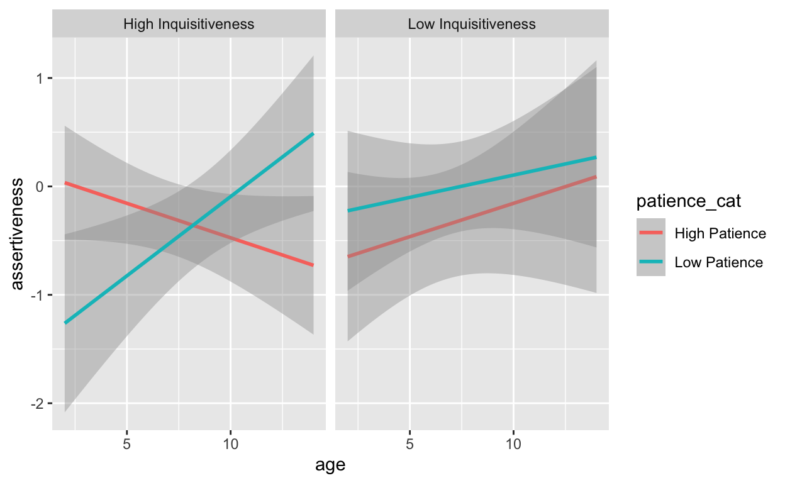
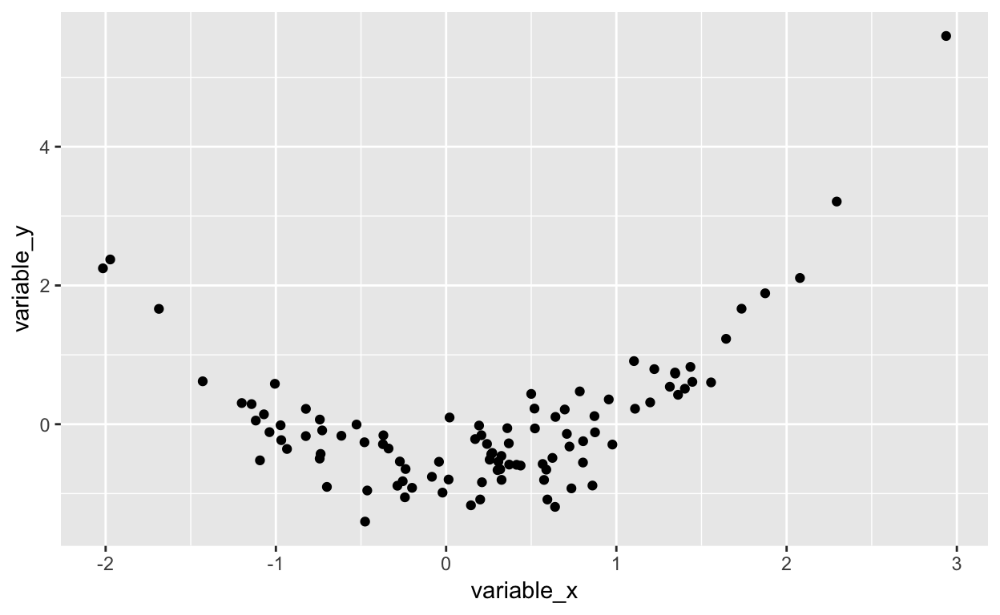

This is the seventh of the weekly exercises. These exercises are designed to reinforce content taught each week. Typically, they consist of quiz questions and R exercises that require you to enter code into a box. These exercises are split into beginner and advance sections. It is expected that students can complete the beginner sections of each weekly exercise, with the advanced sections designed for students who want an extra challenge or learn additional functions in R.If you are struggling, each exercise comes with a number of hints that may be helpful.
Below is a vector of numbers. Standardise the numbers in this vector and save the result as z.numbers.
numbers <- c(73,77,86,81,75,83,89,121,104,77,113,104,97,107,99,110,103,84,103,99,95,93,113,83,103,92,92,107,111,103,104,110,109,102,96,88,108,101,92,86)numbers <- c(73,77,86,81,75,83,89,121,104,77,113,104,97,107,99,110,103,84,103,99,95,93,113,83,103,92,92,107,111,103,104,110,109,102,96,88,108,101,92,86)
z.numbersUse the `scale()` function to get standardised values. Make sure to set the 'scale' and 'center' arguments to `TRUE`.Because of a quirk with the `scale()` function, you will need to convert the output to a vector using either the `c()` or the `as.vector()` function.
Next hint will show the solution...z.numbers <- scale(numbers,scale = TRUE,center = TRUE) %>% as.vector()checker()Below is code that tests for an interaction effect between two variables. Results from this regression indicate that there is a negative relationship between var1 and DV. However, when running a correlation between the two variables, you find that there is a strong positive association. This would indicate that there is an error in the code for the regression. Fix the code so that the right conclusions can be drawn from the linear regression.
data <- data.frame(ID = 1:80,
var1 = c(36,31,26,95,35,42,89,86,5,44,56,27,100,86,4,78,19,40,30,33,73,81,16,45,68,22,79,93,13,3,43,48,77,91,98,90,60,61,66,44,27,34,80,21,64,13,93,86,7,3,35,72,87,62,94,99,89,18,72,5,54,78,89,97,20,17,67,24,79,18,100,75,44,64,66,30,44,57,66,34),
var2 = c(57,91,9,74,94,89,26,28,50,86,81,5,98,41,52,98,65,71,39,68,99,11,82,88,92,6,78,17,36,86,8,15,77,26,70,19,6,93,55,50,3,4,59,4,88,77,39,24,59,72,8,93,58,60,96,65,93,38,12,27,95,39,92,3,2,48,43,87,72,74,44,15,28,51,23,75,99,42,76,24),
e = c(-1.48,-1.2,0.94,2.65,0.32,0.23,-0.5,0.15,1.94,-0.73,1.19,1.21,0.04,-1.17,0.11,0.41,0.66,0.01,-1.41,0.25,0.01,0.49,1.37,1.69,-1.02,0.5,-1.1,-1.32,1.18,1.47,1.4,-0.21,-1.59,-0.19,-0.54,0.96,0.61,-0.2,0.6,0.74,0.43,1.33,0.73,0,1.85,0.55,-0.38,-0.37,-0.48,1.91,0.81,0.14,1.28,-1.13,-0.31,0.36,0.98,0.93,1.26,2.14,0.5,0.05,-0.64,1.65,-2.47,-0.73,-0.8,1.02,-0.66,1.3,-0.79,0.33,0.35,0.37,-0.79,-0.41,-1.68,-0.2,-0.82,1.28)) %>%
mutate(DV = (.2*var1) + (-.3*var2) + .4*(var1-53)*(var2-.53) + e)cor.test(~ var1 + DV,data = data)
lm.model <- lm(DV ~ var1*var2,data = data)
summary(lm.model)When including an interaction term, the variables need to be rescaled in some way...The variables need to be centred to ensure that the main effect and the interaction term are not too highly correlated.
Next hint will show the solution...data2 <- mutate(data,c.var1 = scale(var1,center = TRUE) %>% as.vector(),
c.var2 = scale(var2,center = TRUE) %>% as.vector())
lm.model <- lm(DV ~ c.var1*c.var2,data = data2)
summary(lm.model)
#To get standardised results:
lm.model <- lm(DV ~ c.var1*c.var2,data = data2) %>%
lm.beta()
summary(lm.model)checker()You measure the personality characteristics of 100 common marmosets on five domains (see data.frame marmoset.data). You predict that older marmosets will be more assertive, but only if they are low in patience. Run a linear regression with an interaction term to test this hypothesis. Save standardised regression coefficients from the function lm.beta() to an object named marmoset.beta.
marmoset.data <- data.frame(ID = 1:100,
age = c(13,2,9,8,14,6,3,12,5,2,5,10,3,10,2,7,3,14,9,11,3,9,14,12,14,3,9,2,5,12,14,2,10,10,11,2,8,2,12,8,9,6,8,10,7,2,3,9,12,4,9,4,2,13,8,11,12,13,4,13,3,3,2,8,8,8,12,3,13,7,2,3,2,12,14,6,7,7,11,6,6,8,8,2,5,3,14,13,8,8,4,12,6,9,7,3,12,4,5,11),
conscientiousness = c(-0.99,-0.55,-1.03,0.45,-0.97,0.28,0.87,-0.47,0.63,-0.48,0.32,0.39,1.05,-0.54,-1.89,-1.23,-1.69,0.34,-0.86,1.41,-0.78,-1.57,-0.77,0.48,1.48,1.06,-0.12,0.07,0.54,0.92,1.21,0.13,0.51,0.22,-0.5,-0.8,-2.25,0.29,0,-0.36,-0.94,1.27,0.56,-0.33,-1.66,-0.33,-2.17,-1.11,-0.66,0.39,0.32,-0.6,-1.73,-0.09,0.6,-0.66,1.56,-0.82,0.69,0.09,-1.08,0.87,1.73,0.13,-0.75,-0.21,-1.91,-1.41,-1.21,0.78,1.17,0.67,-0.08,0.05,-2.28,1.68,1.15,0.15,0.12,-0.01,-1.21,-2.29,-0.34,-0.71,0.16,0.2,0.2,-0.07,0.1,-0.98,-0.38,0.27,0.22,0.27,-0.59,0.53,-0.69,1.64,-1.4,-0.87),
agreeableness = c(-1.4,0.36,-0.55,-1.28,1.07,-0.84,0.69,-1.63,0.31,0.82,-0.55,1.51,-0.86,-1.63,-3.11,1.46,-0.71,0.21,-0.68,-0.12,-0.62,0.02,0.48,-1.08,0.35,-0.11,0.7,0.29,1.1,-0.83,-0.58,-0.05,1.09,-0.71,-1.17,-0.74,-0.13,0.45,1.79,1.04,-0.5,-0.08,-0.82,0.15,0.63,0.36,-2.22,-0.06,1.69,0.76,-1.52,0.47,-0.58,-0.93,-1.87,0.67,1.98,-1.22,-1.5,0.01,-0.44,2.53,0.02,-2.32,0.42,-0.33,-1.14,-0.43,0.21,-2.28,0.45,1.13,-1.43,2.03,-0.81,-0.16,-0.9,-2.51,-0.81,0.73,0.48,-1.35,0.17,-0.2,0.04,1.52,0.58,-1.41,0.09,0.42,-0.29,0.18,-0.44,0.4,0.61,1.31,0.91,0.46,0.55,0.01),
assertiveness = c(0.77,-1.28,0.47,-0.81,-0.17,0.28,-1.34,-1.12,-0.13,-0.42,-2.3,-0.74,-1.78,2.11,-0.18,-0.06,-1.13,-2.13,-0.24,0.06,-2.55,-0.45,-0.77,-0.53,0.35,-0.65,1.27,-1.19,-1.25,0.1,1.67,-0.81,1.13,-1.39,0.34,-2.23,0.96,1.28,0.21,0.04,-1.99,0.04,0.31,-0.32,-0.56,-0.61,-0.04,1.41,-0.62,-2.12,-0.51,0.1,1.37,-1.65,-0.38,0.95,1.09,0.15,-0.28,-0.61,0.55,0.73,1.65,-0.95,-0.25,0.86,-0.81,0.85,0.32,-0.83,-0.54,-0.69,-0.9,1.47,0.47,-1.12,0.09,-0.11,1.08,-2.19,-1.23,0.13,-0.2,-0.95,0.87,-0.04,-0.79,-0.33,0.6,0.69,0.13,0.52,0.59,-0.15,1.03,-0.5,-0.21,-1.8,-0.21,-2.25),
patience = c(-0.67,-0.33,-2,1.73,-0.3,0.55,-0.77,-1.47,-0.01,1.02,-1.07,1.78,-1.41,-0.21,0.53,0.33,-1.2,1.11,-0.39,-0.23,-0.32,-0.88,-0.18,1.46,-0.74,2.78,-0.03,-0.07,0.06,-0.66,-1.65,0.16,2.18,1.08,0.64,0.29,-0.35,-1.64,0.21,-0.02,-0.34,0.67,-0.46,-1.21,0.76,0.55,-0.81,-0.17,-0.37,-0.58,-0.18,0.68,1.34,0.83,0.46,0.72,-0.72,0.31,-0.87,-0.58,0.7,0.15,-0.48,-0.27,-0.58,-1.17,0.54,1.25,0.25,-0.09,1.39,0.16,0.95,0.98,-0.87,0.88,-1.6,-0.13,-0.49,0.5,0.83,-0.44,0.41,-0.13,0.23,0.26,0.63,2.32,-1.15,-0.97,-0.35,-0.15,-1.92,-0.98,0.77,0.76,-1.46,-0.47,0.55,-0.58),
inquisitiveness = c(0.36,-1.42,1.03,0.44,0.14,-1.24,-0.85,-0.8,-0.51,-1.29,-0.03,0.46,0.58,0.71,0.4,0.96,-1.86,1.07,-1,-0.8,0.26,0.44,0.98,-0.09,1.04,0.17,-0.86,-0.32,-1.01,-0.29,-0.48,2.05,-0.26,-0.96,0.69,-1.64,1.29,-0.73,0.08,-0.43,0.27,1.31,-2.09,0.85,-2.42,1.54,0.4,-1.07,0.22,0.03,0.11,0.48,-0.06,0.62,0.57,0.91,0.22,0.56,0.6,-0.29,1.04,0.93,-0.83,0.84,1.68,-0.65,1.74,0.27,-0.27,-1,-0.82,-0.39,0.99,-0.18,0.27,1.62,0.1,0.7,1.5,-1.5,-0.83,-0.59,-0.45,0.57,-0.84,-1.48,-0.55,1.22,0.02,0.68,-0.36,-0.53,-0.9,-0.28,0.2,0.74,-0.31,0.23,-1.09,1.81)) %>%
mutate(i = ((age-7.54)*patience + 0.292178)/3.716451,
assertiveness = round(-.8*i + assertiveness,2)) %>%
dplyr::select(-i)#marmoset.dataThe variables need to be centred to ensure that the main effect and the interaction term are not too highly correlated.Use the `lm.beta()` function to get the standardised coefficients.
Next hint will show the solution...##Center Variables.
marmoset.data.c <- mutate(marmoset.data,
c.patience = scale(patience) %>% as.vector(),
c.age = scale(age) %>% as.vector())
##Run regression and get standardised coefficients.
marmoset.beta <- lm(assertiveness ~ c.patience*c.age,data = marmoset.data.c) %>%
lm.beta() %>%
summary()
marmoset.betachecker()Plot the analysis from Question 3 to determine the correct pattern of results.
marmoset.data <- data.frame(ID = 1:100,
age = c(13,2,9,8,14,6,3,12,5,2,5,10,3,10,2,7,3,14,9,11,3,9,14,12,14,3,9,2,5,12,14,2,10,10,11,2,8,2,12,8,9,6,8,10,7,2,3,9,12,4,9,4,2,13,8,11,12,13,4,13,3,3,2,8,8,8,12,3,13,7,2,3,2,12,14,6,7,7,11,6,6,8,8,2,5,3,14,13,8,8,4,12,6,9,7,3,12,4,5,11),
conscientiousness = c(-0.99,-0.55,-1.03,0.45,-0.97,0.28,0.87,-0.47,0.63,-0.48,0.32,0.39,1.05,-0.54,-1.89,-1.23,-1.69,0.34,-0.86,1.41,-0.78,-1.57,-0.77,0.48,1.48,1.06,-0.12,0.07,0.54,0.92,1.21,0.13,0.51,0.22,-0.5,-0.8,-2.25,0.29,0,-0.36,-0.94,1.27,0.56,-0.33,-1.66,-0.33,-2.17,-1.11,-0.66,0.39,0.32,-0.6,-1.73,-0.09,0.6,-0.66,1.56,-0.82,0.69,0.09,-1.08,0.87,1.73,0.13,-0.75,-0.21,-1.91,-1.41,-1.21,0.78,1.17,0.67,-0.08,0.05,-2.28,1.68,1.15,0.15,0.12,-0.01,-1.21,-2.29,-0.34,-0.71,0.16,0.2,0.2,-0.07,0.1,-0.98,-0.38,0.27,0.22,0.27,-0.59,0.53,-0.69,1.64,-1.4,-0.87),
agreeableness = c(-1.4,0.36,-0.55,-1.28,1.07,-0.84,0.69,-1.63,0.31,0.82,-0.55,1.51,-0.86,-1.63,-3.11,1.46,-0.71,0.21,-0.68,-0.12,-0.62,0.02,0.48,-1.08,0.35,-0.11,0.7,0.29,1.1,-0.83,-0.58,-0.05,1.09,-0.71,-1.17,-0.74,-0.13,0.45,1.79,1.04,-0.5,-0.08,-0.82,0.15,0.63,0.36,-2.22,-0.06,1.69,0.76,-1.52,0.47,-0.58,-0.93,-1.87,0.67,1.98,-1.22,-1.5,0.01,-0.44,2.53,0.02,-2.32,0.42,-0.33,-1.14,-0.43,0.21,-2.28,0.45,1.13,-1.43,2.03,-0.81,-0.16,-0.9,-2.51,-0.81,0.73,0.48,-1.35,0.17,-0.2,0.04,1.52,0.58,-1.41,0.09,0.42,-0.29,0.18,-0.44,0.4,0.61,1.31,0.91,0.46,0.55,0.01),
assertiveness = c(0.77,-1.28,0.47,-0.81,-0.17,0.28,-1.34,-1.12,-0.13,-0.42,-2.3,-0.74,-1.78,2.11,-0.18,-0.06,-1.13,-2.13,-0.24,0.06,-2.55,-0.45,-0.77,-0.53,0.35,-0.65,1.27,-1.19,-1.25,0.1,1.67,-0.81,1.13,-1.39,0.34,-2.23,0.96,1.28,0.21,0.04,-1.99,0.04,0.31,-0.32,-0.56,-0.61,-0.04,1.41,-0.62,-2.12,-0.51,0.1,1.37,-1.65,-0.38,0.95,1.09,0.15,-0.28,-0.61,0.55,0.73,1.65,-0.95,-0.25,0.86,-0.81,0.85,0.32,-0.83,-0.54,-0.69,-0.9,1.47,0.47,-1.12,0.09,-0.11,1.08,-2.19,-1.23,0.13,-0.2,-0.95,0.87,-0.04,-0.79,-0.33,0.6,0.69,0.13,0.52,0.59,-0.15,1.03,-0.5,-0.21,-1.8,-0.21,-2.25),
patience = c(-0.67,-0.33,-2,1.73,-0.3,0.55,-0.77,-1.47,-0.01,1.02,-1.07,1.78,-1.41,-0.21,0.53,0.33,-1.2,1.11,-0.39,-0.23,-0.32,-0.88,-0.18,1.46,-0.74,2.78,-0.03,-0.07,0.06,-0.66,-1.65,0.16,2.18,1.08,0.64,0.29,-0.35,-1.64,0.21,-0.02,-0.34,0.67,-0.46,-1.21,0.76,0.55,-0.81,-0.17,-0.37,-0.58,-0.18,0.68,1.34,0.83,0.46,0.72,-0.72,0.31,-0.87,-0.58,0.7,0.15,-0.48,-0.27,-0.58,-1.17,0.54,1.25,0.25,-0.09,1.39,0.16,0.95,0.98,-0.87,0.88,-1.6,-0.13,-0.49,0.5,0.83,-0.44,0.41,-0.13,0.23,0.26,0.63,2.32,-1.15,-0.97,-0.35,-0.15,-1.92,-0.98,0.77,0.76,-1.46,-0.47,0.55,-0.58),
inquisitiveness = c(0.36,-1.42,1.03,0.44,0.14,-1.24,-0.85,-0.8,-0.51,-1.29,-0.03,0.46,0.58,0.71,0.4,0.96,-1.86,1.07,-1,-0.8,0.26,0.44,0.98,-0.09,1.04,0.17,-0.86,-0.32,-1.01,-0.29,-0.48,2.05,-0.26,-0.96,0.69,-1.64,1.29,-0.73,0.08,-0.43,0.27,1.31,-2.09,0.85,-2.42,1.54,0.4,-1.07,0.22,0.03,0.11,0.48,-0.06,0.62,0.57,0.91,0.22,0.56,0.6,-0.29,1.04,0.93,-0.83,0.84,1.68,-0.65,1.74,0.27,-0.27,-1,-0.82,-0.39,0.99,-0.18,0.27,1.62,0.1,0.7,1.5,-1.5,-0.83,-0.59,-0.45,0.57,-0.84,-1.48,-0.55,1.22,0.02,0.68,-0.36,-0.53,-0.9,-0.28,0.2,0.74,-0.31,0.23,-1.09,1.81)) %>%
mutate(i = ((age-7.54)*patience + 0.292178)/3.716451,
assertiveness = round(-.8*i + assertiveness,2)) %>%
dplyr::select(-i)#marmoset.dataA good way to determine the nature of an interaction is to plot the data...You can use the following code to plot the data:
#Get mean to split the plot by the moderator.
mean(marmoset.data$patience)
plot.data <- mutate(marmoset.data,cat.patience = ifelse(patience > -0.0043,"high patience","low patience"))
ggplot(plot.data,mapping = aes(x = age, y = assertiveness,group = cat.patience,colour = cat.patience)) +
geom_smooth(method = "lm")
#The plot above splits the dataset into high and low scorers on patience, then plots the relationship between age and assertiveness for each. Note that red denotes high patience, while blue denotes low patience.As young children get older, they get better at a problem-solving task. You hypothesise that the association between age and performance on this problem-solving task can be explained by the child’s propensity to automatically imitate the behaviour of others. You collect data from 60 children between the ages of 3 and 10 years, and measure the percentage of behaviours automatically imitated in a lab setting, and also test them on the problem solving task (see data.frame imitation.data). Complete the code below to determine whether it is possible that imitation mediates the association between age and problem_solving.
imitation.data <- data.frame(ID = 1:60,
age = c(9,8,4,10,8,9,3,9,5,7,9,9,10,7,6,8,4,7,5,10,3,3,8,8,6,10,6,7,9,5,9,5,8,3,7,4,10,5,4,5,7,3,6,9,7,9,5,7,8,6,7,5,5,3,8,4,9,8,8,3),
imitation = c(0.7,0.79,0.72,0.73,0.26,0.46,0.23,0.56,0.06,0.86,0.68,0.94,0.55,0.75,0.13,1,0.35,0.49,0.05,1,0,0,0.34,0.38,0,0.49,0.57,0.34,0.8,0.52,0.5,0.29,0.48,0.45,0.54,0,1,0.16,0.31,0.34,0.21,0.16,0.2,0.75,0.73,0.3,0.47,0.22,0.29,0.25,0.2,0.36,0.33,0.45,0.7,0,0.25,0.55,0.58,0.58),
problem_solving = c(7,6,7,6,4,2,0,2,5,6,6,10,5,7,0,9,7,4,9,9,1,3,1,2,5,3,12,10,13,11,3,1,0,12,6,1,20,0,6,9,2,3,6,16,10,3,1,2,0,3,6,1,4,1,7,2,7,10,1,0))#imitation.data
#1. Is there an association between the IV and the DV?
y.model <- lm() %>%
lm.beta() %>%
summary()
#2. Does the association between the IV and the DV decrease when including the mediator?
y2.model <- lm() %>%
lm.beta() %>%
summary()
#3. Is there an association between the mediator and the IV?
m.model <- lm() %>%
lm.beta() %>%
summary()Create models that test each of the relationships specified.Check the data.frame `imitation.data` to get the variable names.
Next hint will show the solution...y.model <- lm(problem_solving ~ age,data = imitation.data) %>%
lm.beta() %>%
summary()
y.model
y2.model <- lm(problem_solving ~ age + imitation,data = imitation.data) %>%
lm.beta() %>%
summary()
y2.model
m.model <- lm(imitation ~ age,data = imitation.data) %>%
lm.beta() %>%
summary()
m.modelchecker()For the imitation.data, use the mediate() function to determine the direct and indirect effect for the hypothesised mediation.
imitation.data <- data.frame(ID = 1:60,
age = c(9,8,4,10,8,9,3,9,5,7,9,9,10,7,6,8,4,7,5,10,3,3,8,8,6,10,6,7,9,5,9,5,8,3,7,4,10,5,4,5,7,3,6,9,7,9,5,7,8,6,7,5,5,3,8,4,9,8,8,3),
imitation = c(0.7,0.79,0.72,0.73,0.26,0.46,0.23,0.56,0.06,0.86,0.68,0.94,0.55,0.75,0.13,1,0.35,0.49,0.05,1,0,0,0.34,0.38,0,0.49,0.57,0.34,0.8,0.52,0.5,0.29,0.48,0.45,0.54,0,1,0.16,0.31,0.34,0.21,0.16,0.2,0.75,0.73,0.3,0.47,0.22,0.29,0.25,0.2,0.36,0.33,0.45,0.7,0,0.25,0.55,0.58,0.58),
problem_solving = c(7,6,7,6,4,2,0,2,5,6,6,10,5,7,0,9,7,4,9,9,1,3,1,2,5,3,12,10,13,11,3,1,0,12,6,1,20,0,6,9,2,3,6,16,10,3,1,2,0,3,6,1,4,1,7,2,7,10,1,0))#imitation.data
med.model <- mediate()Remember, the formula for the mediate function is slightly different. The mediator is put within brackets.
DV ~ IV + (Mediator)Remember to set the 'std' argument to `TRUE` to get standardised estimates.
Next hint will show the solution...med.model <- mediate(problem_solving ~ age + (imitation),data = imitation.data,std = TRUE)
med.modelchecker()This week’s advanced exercises focuses on expanding the uses of linear regression.
Often, when conducting linear regressions, we are required to control for extraneous variables. As described in the lectures, simply entering these extraneous variables into the regression analysis with your predictors is a way of including variables as control variables. Essentially the same process occurs when including a control variable when assessing an interaction effect.
Below, we have an example where the relationship being assessed is the interaction between pred1 and pred2 on the outcome variable. Without a control variable, the formula would like this:
lm(outcome ~ pred1*pred2,data = data)
#OR
lm(outcome ~ pred1 + pred2 + pred1:pred2,data = data)To include the control variable, we simply need to add this variable (and its interaction terms with the two predictors) into the model. The way to interpret this is that the interaction term of interest (pred1:pred2) is the variance explained by the interaction once the variance explained by the control variable and its interactions (control) has been accounted for.
lm(outcome ~ pred1*pred2 + pred1*control + pred2*control,data = data)
#OR
lm(outcome ~ pred1 + pred2 + control + pred1:pred2 + pred1:control + pred2:control,data = data)In the code box below, using the marmoset dataset from question 3, conduct a moderation analysis between the influence of patience (predictor 1) and age (predictor 2) on assertiveness (outcome), while controlling for both agreeableness and conscientiousness.
marmoset.data <- data.frame(ID = 1:100,
age = c(13,2,9,8,14,6,3,12,5,2,5,10,3,10,2,7,3,14,9,11,3,9,14,12,14,3,9,2,5,12,14,2,10,10,11,2,8,2,12,8,9,6,8,10,7,2,3,9,12,4,9,4,2,13,8,11,12,13,4,13,3,3,2,8,8,8,12,3,13,7,2,3,2,12,14,6,7,7,11,6,6,8,8,2,5,3,14,13,8,8,4,12,6,9,7,3,12,4,5,11),
conscientiousness = c(-0.99,-0.55,-1.03,0.45,-0.97,0.28,0.87,-0.47,0.63,-0.48,0.32,0.39,1.05,-0.54,-1.89,-1.23,-1.69,0.34,-0.86,1.41,-0.78,-1.57,-0.77,0.48,1.48,1.06,-0.12,0.07,0.54,0.92,1.21,0.13,0.51,0.22,-0.5,-0.8,-2.25,0.29,0,-0.36,-0.94,1.27,0.56,-0.33,-1.66,-0.33,-2.17,-1.11,-0.66,0.39,0.32,-0.6,-1.73,-0.09,0.6,-0.66,1.56,-0.82,0.69,0.09,-1.08,0.87,1.73,0.13,-0.75,-0.21,-1.91,-1.41,-1.21,0.78,1.17,0.67,-0.08,0.05,-2.28,1.68,1.15,0.15,0.12,-0.01,-1.21,-2.29,-0.34,-0.71,0.16,0.2,0.2,-0.07,0.1,-0.98,-0.38,0.27,0.22,0.27,-0.59,0.53,-0.69,1.64,-1.4,-0.87),
agreeableness = c(-1.4,0.36,-0.55,-1.28,1.07,-0.84,0.69,-1.63,0.31,0.82,-0.55,1.51,-0.86,-1.63,-3.11,1.46,-0.71,0.21,-0.68,-0.12,-0.62,0.02,0.48,-1.08,0.35,-0.11,0.7,0.29,1.1,-0.83,-0.58,-0.05,1.09,-0.71,-1.17,-0.74,-0.13,0.45,1.79,1.04,-0.5,-0.08,-0.82,0.15,0.63,0.36,-2.22,-0.06,1.69,0.76,-1.52,0.47,-0.58,-0.93,-1.87,0.67,1.98,-1.22,-1.5,0.01,-0.44,2.53,0.02,-2.32,0.42,-0.33,-1.14,-0.43,0.21,-2.28,0.45,1.13,-1.43,2.03,-0.81,-0.16,-0.9,-2.51,-0.81,0.73,0.48,-1.35,0.17,-0.2,0.04,1.52,0.58,-1.41,0.09,0.42,-0.29,0.18,-0.44,0.4,0.61,1.31,0.91,0.46,0.55,0.01),
assertiveness = c(0.77,-1.28,0.47,-0.81,-0.17,0.28,-1.34,-1.12,-0.13,-0.42,-2.3,-0.74,-1.78,2.11,-0.18,-0.06,-1.13,-2.13,-0.24,0.06,-2.55,-0.45,-0.77,-0.53,0.35,-0.65,1.27,-1.19,-1.25,0.1,1.67,-0.81,1.13,-1.39,0.34,-2.23,0.96,1.28,0.21,0.04,-1.99,0.04,0.31,-0.32,-0.56,-0.61,-0.04,1.41,-0.62,-2.12,-0.51,0.1,1.37,-1.65,-0.38,0.95,1.09,0.15,-0.28,-0.61,0.55,0.73,1.65,-0.95,-0.25,0.86,-0.81,0.85,0.32,-0.83,-0.54,-0.69,-0.9,1.47,0.47,-1.12,0.09,-0.11,1.08,-2.19,-1.23,0.13,-0.2,-0.95,0.87,-0.04,-0.79,-0.33,0.6,0.69,0.13,0.52,0.59,-0.15,1.03,-0.5,-0.21,-1.8,-0.21,-2.25),
patience = c(-0.67,-0.33,-2,1.73,-0.3,0.55,-0.77,-1.47,-0.01,1.02,-1.07,1.78,-1.41,-0.21,0.53,0.33,-1.2,1.11,-0.39,-0.23,-0.32,-0.88,-0.18,1.46,-0.74,2.78,-0.03,-0.07,0.06,-0.66,-1.65,0.16,2.18,1.08,0.64,0.29,-0.35,-1.64,0.21,-0.02,-0.34,0.67,-0.46,-1.21,0.76,0.55,-0.81,-0.17,-0.37,-0.58,-0.18,0.68,1.34,0.83,0.46,0.72,-0.72,0.31,-0.87,-0.58,0.7,0.15,-0.48,-0.27,-0.58,-1.17,0.54,1.25,0.25,-0.09,1.39,0.16,0.95,0.98,-0.87,0.88,-1.6,-0.13,-0.49,0.5,0.83,-0.44,0.41,-0.13,0.23,0.26,0.63,2.32,-1.15,-0.97,-0.35,-0.15,-1.92,-0.98,0.77,0.76,-1.46,-0.47,0.55,-0.58),
inquisitiveness = c(0.36,-1.42,1.03,0.44,0.14,-1.24,-0.85,-0.8,-0.51,-1.29,-0.03,0.46,0.58,0.71,0.4,0.96,-1.86,1.07,-1,-0.8,0.26,0.44,0.98,-0.09,1.04,0.17,-0.86,-0.32,-1.01,-0.29,-0.48,2.05,-0.26,-0.96,0.69,-1.64,1.29,-0.73,0.08,-0.43,0.27,1.31,-2.09,0.85,-2.42,1.54,0.4,-1.07,0.22,0.03,0.11,0.48,-0.06,0.62,0.57,0.91,0.22,0.56,0.6,-0.29,1.04,0.93,-0.83,0.84,1.68,-0.65,1.74,0.27,-0.27,-1,-0.82,-0.39,0.99,-0.18,0.27,1.62,0.1,0.7,1.5,-1.5,-0.83,-0.59,-0.45,0.57,-0.84,-1.48,-0.55,1.22,0.02,0.68,-0.36,-0.53,-0.9,-0.28,0.2,0.74,-0.31,0.23,-1.09,1.81)) %>%
mutate(i = ((age-7.54)*patience + 0.292178)/3.716451,
assertiveness = round(-.8*i + assertiveness,2)) %>%
dplyr::select(-i)#marmoset.dataRemember to center all the predictors before including them in a linear regression with interaction terms.You will need to include the interaction term between the control variable and both the predictors.
Next hint will show the solution...##Center Variables.
marmoset.data.c <- mutate(marmoset.data,
c.patience = scale(patience) %>% as.vector(),
c.age = scale(age) %>% as.vector(),
c.agreeableness = scale(agreeableness) %>% as.vector(),
c.conscientiousness = scale(conscientiousness) %>% as.vector())
##Run regression and get standardised coefficients.
marmoset.beta <- lm(assertiveness ~ c.patience*c.age + c.patience*c.agreeableness + c.patience*c.conscientiousness + c.age*c.agreeableness + c.age*c.conscientiousness,data = marmoset.data.c) %>%
lm.beta() %>%
summary()
marmoset.betaSimilar to with the moderation, including a control variable in each of the lm() models to determine whether a mediation is possible simply involves adding the control variable to each of the formulas. The way to interpret this is that any relationship between the outcome/predictor/mediator first removes any covariance associated with the control variable. This can be shown below:
#Model 1: Is there an association between the predictor and the outcome variable.
lm(outcome ~ predictor + control, data = data)
#Model 2: Does the association between the predictor and outcome change once the mediator is included.
lm(outcome ~ predictor + mediator + control,data = data)
#Model 3: Is there an association between the predictor and the mediator.
lm(mediator ~ predictor + control, data = data)However, when using the mediate() function, including a control variable in the formula works differently than for any other analysis we have covered. Rather than add control variables to the formula, the mediate function expects control variables to be “subtracted”. As such, the formula takes the following form:
outcome ~ predictor + (mediator) -control
In the code box below, using the imitation dataset from Question 5, conduct a mediation analysis to determine whether the association between age and problem-solving score is mediated by imitation behaviour, while controlling for the children’s verbal IQ.
imitation.data <- data.frame(ID = 1:60,
age = c(9,8,4,10,8,9,3,9,5,7,9,9,10,7,6,8,4,7,5,10,3,3,8,8,6,10,6,7,9,5,9,5,8,3,7,4,10,5,4,5,7,3,6,9,7,9,5,7,8,6,7,5,5,3,8,4,9,8,8,3),
imitation = c(0.7,0.79,0.72,0.73,0.26,0.46,0.23,0.56,0.06,0.86,0.68,0.94,0.55,0.75,0.13,1,0.35,0.49,0.05,1,0,0,0.34,0.38,0,0.49,0.57,0.34,0.8,0.52,0.5,0.29,0.48,0.45,0.54,0,1,0.16,0.31,0.34,0.21,0.16,0.2,0.75,0.73,0.3,0.47,0.22,0.29,0.25,0.2,0.36,0.33,0.45,0.7,0,0.25,0.55,0.58,0.58),
problem_solving = c(7,6,7,6,4,2,0,2,5,6,6,10,5,7,0,9,7,4,9,9,1,3,1,2,5,3,12,10,13,11,3,1,0,12,6,1,20,0,6,9,2,3,6,16,10,3,1,2,0,3,6,1,4,1,7,2,7,10,1,0),
vIQ = rnorm(60,100,15))#imitation.dataUse the `mediate()` function to conduct the mediation analysis.Remember to adjust the formula to 'subtract' the control variable.
Next hint will show the solution...med.model <- mediate(problem_solving ~ age + (imitation) - vIQ,data = imitation.data,std = TRUE)
med.modelUp to now, when talking about an interaction, we have mentioned that the influence of one variable on the outcome depends on a another variable, but what if we add ANOTHER variable into the mix. A two-way interaction is when three predictors combine to explain variance in our outcome variable. There are a couple of ways you can think about this: one way is that the interaction between two variables depends on a third predictor. Another way is that the association between one variable and the outcome depends on two other variables.
Three-way interactions is just an extension of the normal (two-way) interaction. Rather than multiple two variables together, we now multiple three variables together to create the interaction term. Everything we have learnt about the interactions applies to three-way interactions - we need to centre variables first before entering them into the model. Also, it is usually best to include all lower level terms in the model - this includes main effects for all three variables, and respecitively two-way interactions between each pair of predictors.
So, the formula for a three-way interaction becomes:
outcome ~ predictor1predictor2predictor3
The formula above automatically contains all lower level terms, as such, it is the same as:
outcome ~ predictor1 + predictor2 + predictor3 + predictor1:predictor2 + predictor1:predictor3 + predictor2:predictor3 + predictor1:predictor2:predictor3
In the code box below, conduct a regression analysis with a three-way interaction term between age, patience, and inquisitiveness in predicting assertiveness.
marmoset.data <- data.frame(ID = 1:100,
age = c(13,2,9,8,14,6,3,12,5,2,5,10,3,10,2,7,3,14,9,11,3,9,14,12,14,3,9,2,5,12,14,2,10,10,11,2,8,2,12,8,9,6,8,10,7,2,3,9,12,4,9,4,2,13,8,11,12,13,4,13,3,3,2,8,8,8,12,3,13,7,2,3,2,12,14,6,7,7,11,6,6,8,8,2,5,3,14,13,8,8,4,12,6,9,7,3,12,4,5,11),
conscientiousness = c(-0.99,-0.55,-1.03,0.45,-0.97,0.28,0.87,-0.47,0.63,-0.48,0.32,0.39,1.05,-0.54,-1.89,-1.23,-1.69,0.34,-0.86,1.41,-0.78,-1.57,-0.77,0.48,1.48,1.06,-0.12,0.07,0.54,0.92,1.21,0.13,0.51,0.22,-0.5,-0.8,-2.25,0.29,0,-0.36,-0.94,1.27,0.56,-0.33,-1.66,-0.33,-2.17,-1.11,-0.66,0.39,0.32,-0.6,-1.73,-0.09,0.6,-0.66,1.56,-0.82,0.69,0.09,-1.08,0.87,1.73,0.13,-0.75,-0.21,-1.91,-1.41,-1.21,0.78,1.17,0.67,-0.08,0.05,-2.28,1.68,1.15,0.15,0.12,-0.01,-1.21,-2.29,-0.34,-0.71,0.16,0.2,0.2,-0.07,0.1,-0.98,-0.38,0.27,0.22,0.27,-0.59,0.53,-0.69,1.64,-1.4,-0.87),
agreeableness = c(-1.4,0.36,-0.55,-1.28,1.07,-0.84,0.69,-1.63,0.31,0.82,-0.55,1.51,-0.86,-1.63,-3.11,1.46,-0.71,0.21,-0.68,-0.12,-0.62,0.02,0.48,-1.08,0.35,-0.11,0.7,0.29,1.1,-0.83,-0.58,-0.05,1.09,-0.71,-1.17,-0.74,-0.13,0.45,1.79,1.04,-0.5,-0.08,-0.82,0.15,0.63,0.36,-2.22,-0.06,1.69,0.76,-1.52,0.47,-0.58,-0.93,-1.87,0.67,1.98,-1.22,-1.5,0.01,-0.44,2.53,0.02,-2.32,0.42,-0.33,-1.14,-0.43,0.21,-2.28,0.45,1.13,-1.43,2.03,-0.81,-0.16,-0.9,-2.51,-0.81,0.73,0.48,-1.35,0.17,-0.2,0.04,1.52,0.58,-1.41,0.09,0.42,-0.29,0.18,-0.44,0.4,0.61,1.31,0.91,0.46,0.55,0.01),
assertiveness = c(0.77,-1.28,0.47,-0.81,-0.17,0.28,-1.34,-1.12,-0.13,-0.42,-2.3,-0.74,-1.78,2.11,-0.18,-0.06,-1.13,-2.13,-0.24,0.06,-2.55,-0.45,-0.77,-0.53,0.35,-0.65,1.27,-1.19,-1.25,0.1,1.67,-0.81,1.13,-1.39,0.34,-2.23,0.96,1.28,0.21,0.04,-1.99,0.04,0.31,-0.32,-0.56,-0.61,-0.04,1.41,-0.62,-2.12,-0.51,0.1,1.37,-1.65,-0.38,0.95,1.09,0.15,-0.28,-0.61,0.55,0.73,1.65,-0.95,-0.25,0.86,-0.81,0.85,0.32,-0.83,-0.54,-0.69,-0.9,1.47,0.47,-1.12,0.09,-0.11,1.08,-2.19,-1.23,0.13,-0.2,-0.95,0.87,-0.04,-0.79,-0.33,0.6,0.69,0.13,0.52,0.59,-0.15,1.03,-0.5,-0.21,-1.8,-0.21,-2.25),
patience = c(-0.67,-0.33,-2,1.73,-0.3,0.55,-0.77,-1.47,-0.01,1.02,-1.07,1.78,-1.41,-0.21,0.53,0.33,-1.2,1.11,-0.39,-0.23,-0.32,-0.88,-0.18,1.46,-0.74,2.78,-0.03,-0.07,0.06,-0.66,-1.65,0.16,2.18,1.08,0.64,0.29,-0.35,-1.64,0.21,-0.02,-0.34,0.67,-0.46,-1.21,0.76,0.55,-0.81,-0.17,-0.37,-0.58,-0.18,0.68,1.34,0.83,0.46,0.72,-0.72,0.31,-0.87,-0.58,0.7,0.15,-0.48,-0.27,-0.58,-1.17,0.54,1.25,0.25,-0.09,1.39,0.16,0.95,0.98,-0.87,0.88,-1.6,-0.13,-0.49,0.5,0.83,-0.44,0.41,-0.13,0.23,0.26,0.63,2.32,-1.15,-0.97,-0.35,-0.15,-1.92,-0.98,0.77,0.76,-1.46,-0.47,0.55,-0.58),
inquisitiveness = c(0.36,-1.42,1.03,0.44,0.14,-1.24,-0.85,-0.8,-0.51,-1.29,-0.03,0.46,0.58,0.71,0.4,0.96,-1.86,1.07,-1,-0.8,0.26,0.44,0.98,-0.09,1.04,0.17,-0.86,-0.32,-1.01,-0.29,-0.48,2.05,-0.26,-0.96,0.69,-1.64,1.29,-0.73,0.08,-0.43,0.27,1.31,-2.09,0.85,-2.42,1.54,0.4,-1.07,0.22,0.03,0.11,0.48,-0.06,0.62,0.57,0.91,0.22,0.56,0.6,-0.29,1.04,0.93,-0.83,0.84,1.68,-0.65,1.74,0.27,-0.27,-1,-0.82,-0.39,0.99,-0.18,0.27,1.62,0.1,0.7,1.5,-1.5,-0.83,-0.59,-0.45,0.57,-0.84,-1.48,-0.55,1.22,0.02,0.68,-0.36,-0.53,-0.9,-0.28,0.2,0.74,-0.31,0.23,-1.09,1.81)) %>%
mutate(i = ((age-7.54)*patience + 0.292178)/3.716451,
assertiveness = round(-.8*i*(.16*inquisitiveness) + assertiveness,2)) %>%
dplyr::select(-i)#marmoset.dataRemember to center all the predictors before including them in a linear regression with interaction terms.Adding a three way interaction into the formula is as simple as multiplying an additional variable in the interaction term.
Next hint will show the solution...##Center Variables.
marmoset.data.c <- mutate(marmoset.data,
c.patience = scale(patience) %>% as.vector(),
c.age = scale(age) %>% as.vector(),
c.inquisitiveness = scale(inquisitiveness) %>% as.vector())
##Run regression (with three-way interaction effect) and get standardised coefficients.
marmoset.beta <- lm(assertiveness ~ c.age*c.patience*c.inquisitiveness,data = marmoset.data.c) %>%
lm.beta() %>%
summary()
marmoset.betaNote, as with a normal, two-way interaction, it is often difficult to intuitve what the interaction term represents just by looking at the numbers. In this instance, it is usually easiest to plot the data to determine what a significant interaction is doing.
Above, we have a significant three-way interaction term. Below, we have code that can be used to visualised this interaction. See if you can determine what each line of code is doing.

Even though we are using a technique called “linear regression”, we can still use it to assess non-linear relationships, such as quadratic relationships.
Below we have an example of two variables that has a non-linear relationship. At low levels of variable_x, there is a negative relationship with variable_y, while at high levels of variable_x, there is a strong positive relationship with variable_y. One way to conceptualise this is that at different levels of variable_x, the relationship between variable_x and variable_y changes. In other words, this behaves exactly like an interaction, but with only one variable!

Ideally, the formula for a non-linear relationship would look something like variable_y ~ variable_x*variable_x, but unfortunately R assumes you’ve made a mistake if you specify the same variable gets mentioned twice in a formula. To explicitly tell R that you want to include a non-linear term, you need to use the poly() function in the formula:
outcome ~ poly(predictor,2)
Again, everything we have learnt about the interactions applies to non-linear terms - we need to centre variables first before entering them into the model, and we also need to include the main effect of the predictor (the poly function will automatically include the main effect of the predictor as well as the non-linear term).
In the code box below, there is a data.frame called performance.data. This data set aims to assess the relationship between stress and perfomance. Previous research has indicated that an intermediate level of stress is ideal for performance (known as the Yerkes-Dodson effect). Determine if this is the case for our data.
performance.data <- data.frame(stress = rnorm(100,0,1),
e = rnorm(100,0,.5)) %>%
mutate(performance = -1*c(scale(.5*stress*stress + e))) %>%
select(-e)#performance.dataThe method for including a non-linear term in the formula is to use the `poly()` function.It may be easier to determine the nature of a non-linear relationship by plotting it.
Next hint will show the solution...##Center Variables.
performance.data.c <- mutate(performance.data,
c.stress = scale(stress) %>% as.vector())
##Run regression and get standardised coefficients.
performance.beta <- lm(performance ~ poly(c.stress,2),data = performance.data.c) %>%
lm.beta() %>%
summary()
performance.beta
##Plot relationship
ggplot(performance.data,aes(x = stress,y = performance)) +
geom_point() +
geom_smooth(method = "lm",formula = y ~ poly(x,2))